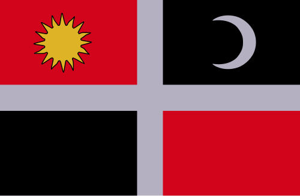

The Csángós are ethnic Hungarians of Roman Catholic faith living mostly in the Romanian region of Moldavia, especially in Bacău County. The region where the Csángós live in Moldavia is known as Csángó Land. Their traditional language, Csángó, a Hungarian dialect, is currently used by only a minority of the Csángó population group. Some Csángós also live in Transylvania and in the village of Oituz in Northern Dobruja.
